Current Members
| 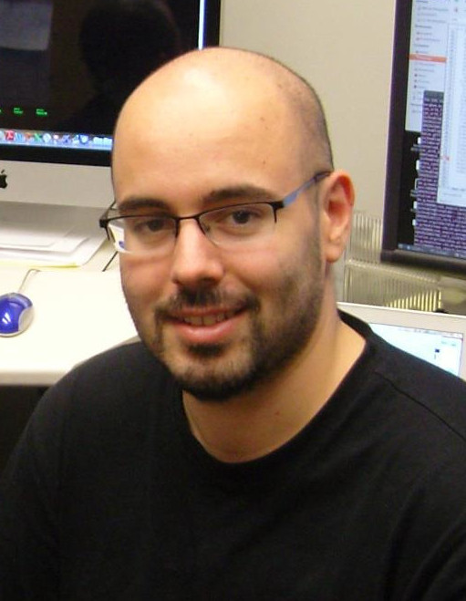 |
James Schnable Principle Investigator CV COI Disclosure |
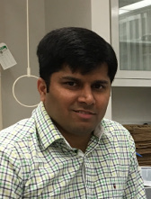 |
Sunil Kumar Postdoctoral Scholar |
 |
Guangchao Sun Postdoctoral Scholar |
| 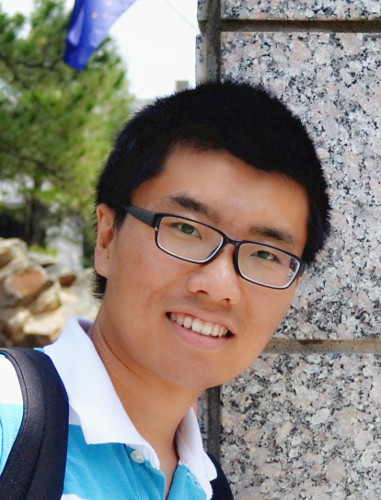 |
Zhikai Liang PhD Student CV | 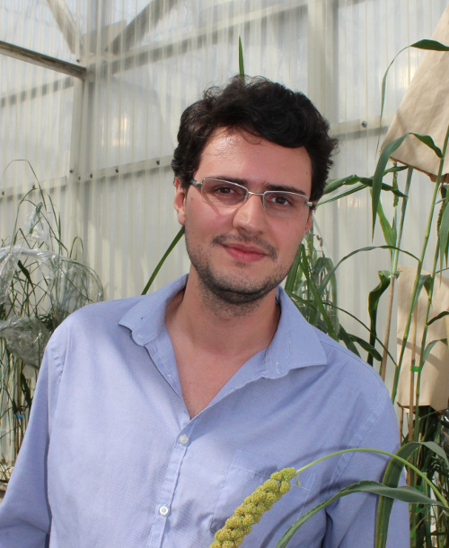 |
Daniel Carvalho PhD Student CV |
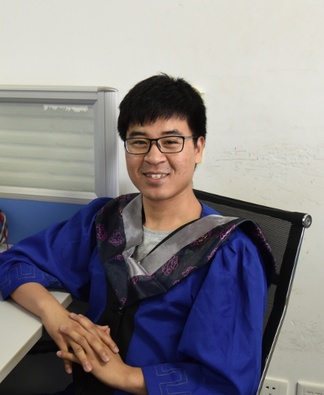 | Chenyong Miao PhD Student CV |
| 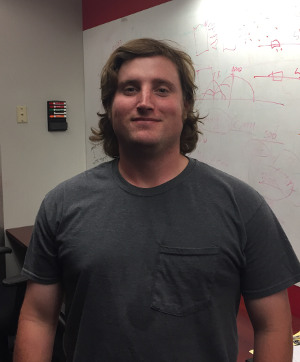 | Preston Hurst Masters Student |
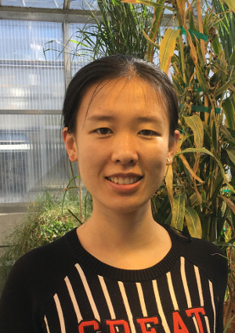 | Xiuru Dai Visiting Student Shandong Agricultural Universty |
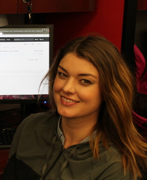 | Sarah Johnson Rotation Student Complex Biosystems CV |
| 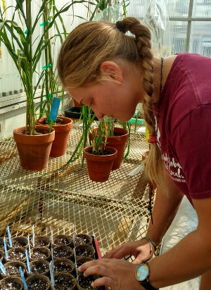 | Holly Podliska UCARE Undergraduate |
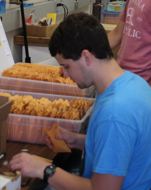 | Thomas Hoban Bachelors Student |
 | Connor Pedersen Bachelors Student |
Former Vistors and Lab Alumni
| 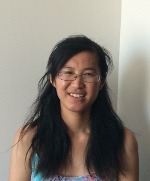 | Lei Tian Visiting PhD Student Henan Agricultural University Summer 2014 |
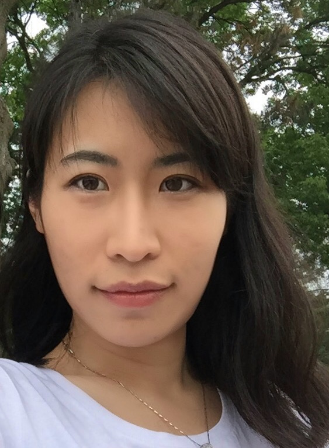 | Yang Zhang Postdoc 2014-2017 |
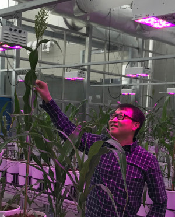 |
Jinliang Yang Postdoctoral Scholar 2016-2017 CV |
| 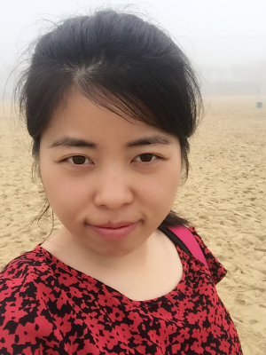 | Lang Yan Visiting Scholar 2016-2017 |
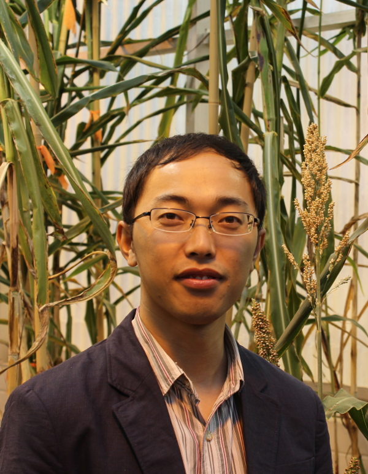 |
Xianjun Lai CSC PhD Student 2015-2017 CV |
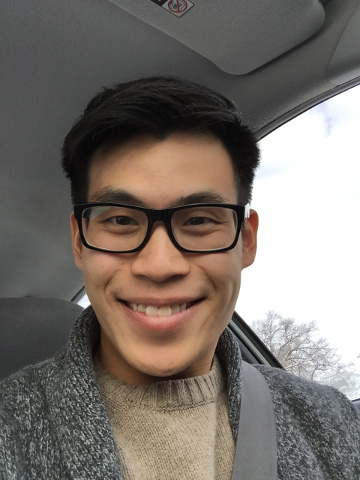 |
Daniel Ngu Bachelors Student 2014-2017 |
 | Kyle Johnson REU Student Summer 2016 Brigham Young University |
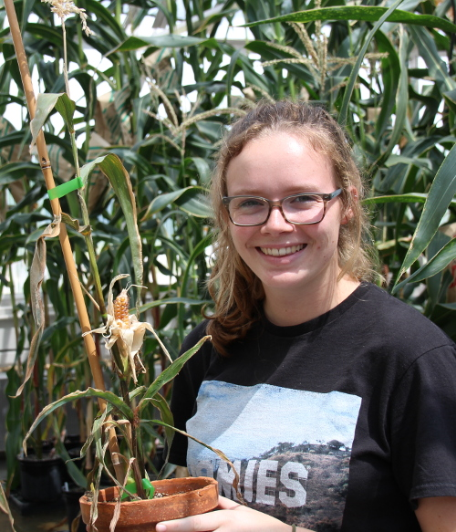 | Taylor Horn REU Student Summer 2016 Baylor University |
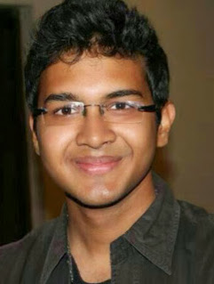 | Bhushit Agarwal Masters Student Computer Science & Engineering Co-Advised 2015-2016 |
| 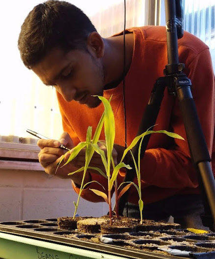 | Srinidhi Bashyam Masters Student Computer Science & Engineering Co-Advised 2015-2016 |
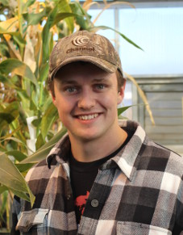 | Logan Olson Bachelors Student 2016-2017 |
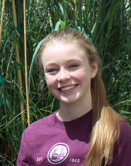 | Nicole Hollander High School Intern Summer 2017 |
| 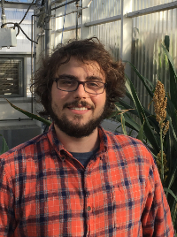 | Nate Korth Food For Health Fellow Rotation Student |
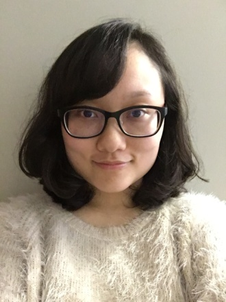 | Xiaoyang (Chloe) Ye Bachelors Student |